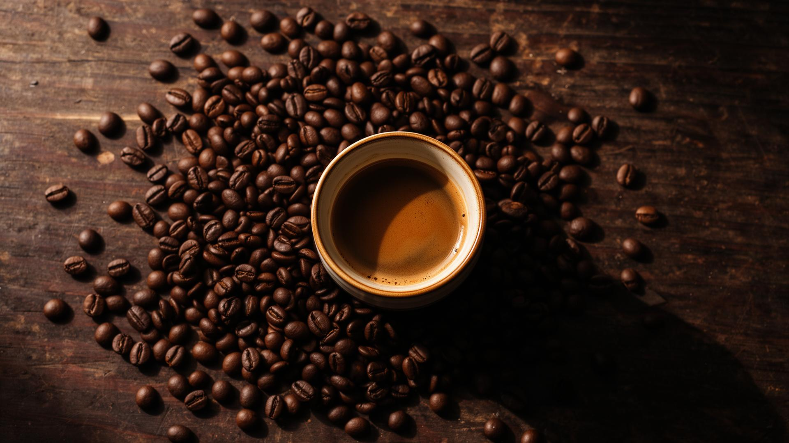
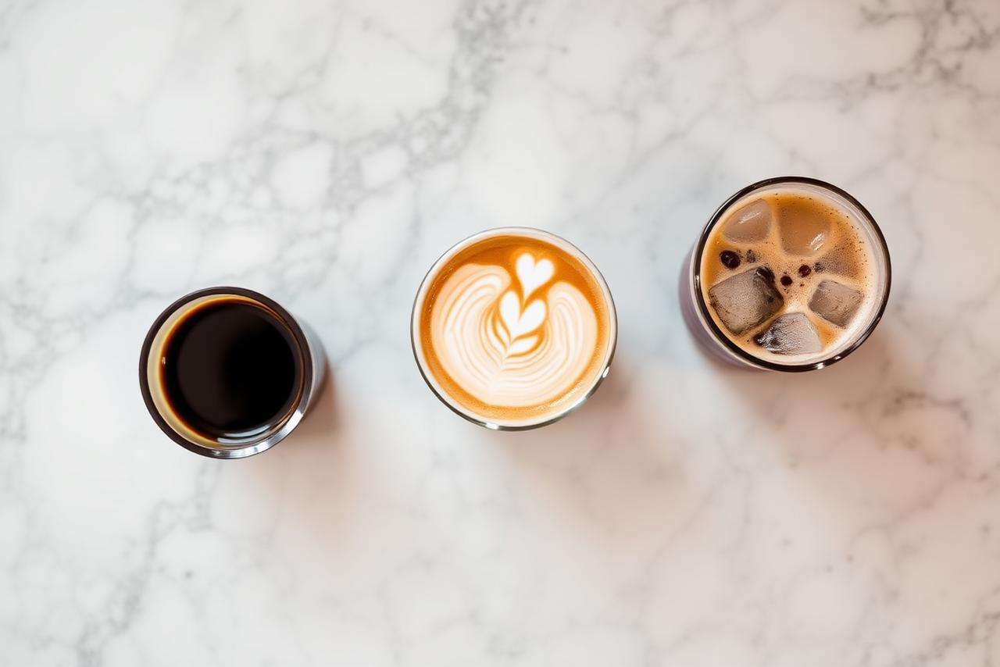

Din 2015 · București
Descoperă aromele autentice ale boabelor selectate manual din cele mai bune plantații din lume.
Fiecare ceașcă spune o poveste — de la fermă până la prima înghițitură.
Fiecare lot este prăjit manual în cantități mici pentru a scoate în evidență aromele unice ale fiecărei origini.
Lucrăm direct cu fermierii pentru a asigura practici sustenabile și prețuri corecte.
Doar boabe de specialitate evaluate peste 84 de puncte ajung în colecția noastră.
De la espresso-uri intense la filtre ușoare și aromate — avem cafeaua perfectă pentru fiecare moment al zilei. Vizitează-ne sau trimite-ne un mesaj.
Scrie-ne →